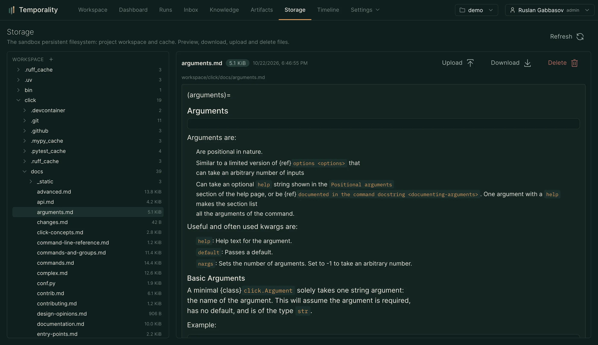
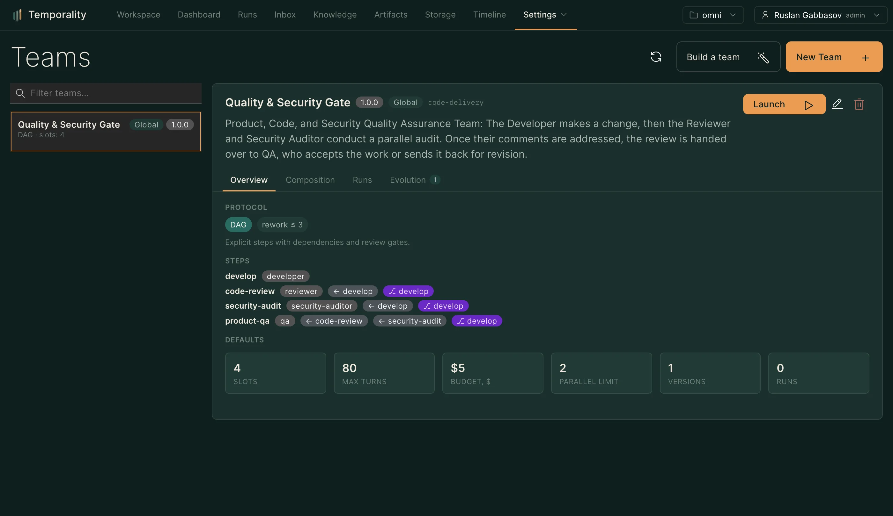
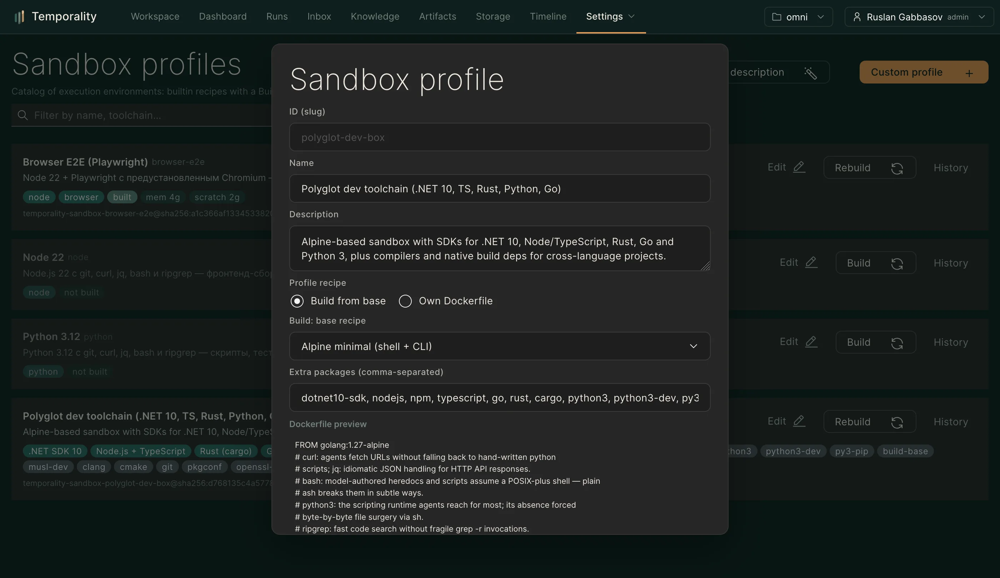

Администрирование
Пользователи и RBAC, оргструктура, провайдеры, секреты, песочницы и настройки качества.
#Резервное копирование

Три хранилища — три истории:
| Хранилище | Что там | Как бэкапить |
|---|---|---|
| PostgreSQL | раны, знания, задачи, пользователи, чаты, журнал | pg_dump (скрипт ниже) |
| Корень песочниц | файлы воркспейсов проектов (/workspace агентов) |
tar каталога |
| rembed-кэш | веса модели эмбеддингов | не нужен — перекачивается сам |
Чаты синхронизируются на сервер (таблица workspace_chat) — очистка
данных браузера больше не теряет их, и они доступны с любого устройства.
Скрипты (из чекаута репозитория):
scripts/backup.sh [каталог] # дамп БД + tar песочниц, хранит 14 последних
scripts/restore.sh db.sql.gz sandbox.tar.gz # останавливает писателей, восстанавливает, стартует
Встроенное расписание: профиль backup в compose — ночной дамп БД и
tar песочниц в ./backups, хранит 14 последних:
docker compose --profile backup up -d backup
Для продакшн-кампаний поверх этого — restic/borg на каталог backups
с выгрузкой вовне (S3/ssh): локальный бэкап не спасает от гибели хоста.
#Обновление
Стек живёт готовыми образами из GHCR. Обновление до последнего релиза:
docker compose pull && docker compose up -d
Для контролируемого обновления (или отката) версия закрепляется явно:
TEMPORALITY_VERSION=2026.2.113 docker compose up -d
Миграции БД применяются ядром автоматически на старте. Данные живут в
именованных томах compose и переживают пересоздание контейнеров. Откат —
к предыдущей версии тем же способом (даунгрейд-миграции есть не для всех
схем; перед откатом крупного шага сделайте дамп postgres).
Сборка из исходников (docker compose -f docker-compose.yml -f docker-compose.dev.yml up --build) — путь разработки: она перезаписывает
локальные образы и по умолчанию превращает TEMPORALITY_VERSION в latest —
на стенде так делать не стоит, иначе «последний релиз» перестанет указывать
на опубликованную версию. Основной compose-файл не умеет собирать вовсе:
деплой — только pull образов.
#Пользователи и RBAC

Страница Пользователи (/users): создание, роли, bearer-токены, каналы
уведомлений. Роли упорядочены: reader < writer < operator < admin.
Выключатель — тумблер в правом нижнем углу карточки: неактивный
пользователь не может войти (токен и пароль) и выпадает из доставки.
| Роль | Может |
|---|---|
| reader | Читать: дашборд, трассы, знания, таймлайн |
| writer | Запускать задачи, создавать ресурсы проекта |
| operator | Подтверждения, reconcile неопределённых операций, invalidation знаний |
| admin | Пользователи, провайдеры, каналы, оргструктура, всё остальное |
Область проектов ограничивает видимость: пользователь видит только
разрешённые проекты (или все при *). Вход password-first: форма «Пароль |
API-токен», токен — вторичный режим для сервисных аккаунтов и скриптов.
#Смена пароля
Своя — через меню аккаунта (POST /v1/auth/password): аккаунт с паролем
подтверждает текущий, SSO-аккаунт без локального пароля задаёт первый с пустым
полем current (минимум 8 символов, сессия не прерывается). При включённом SSO
парольный вход остаётся только у admin — недоступность IdP не блокирует
эксплуатацию (break-glass).
#Оргструктура
Страница Организация (/org, admin): дерево подразделений, пользователи
на узлах, политики на узлах (ограничения моделей, MCP, токенов, сети,
песочниц; запрет канальных задач для поддерева) и режимы наследования.
Проект привязывается к узлу — наследует его политики и область видимости:
доступы команд настраиваются структурой, а не списками.
#Провайдеры и модели
Страница Провайдеры (/providers): OpenAI-совместимые эндпоинты
(base URL, ключ, каталог моделей — автополучение по расписанию
KERNEL_PROVIDER_MODELS_REFRESH + ручной refresh и probe-проверка). Модель
запуска маршрутизируется в провайдер, который её декларирует; модели каталога
имеют роли (chat / embedding / asr) — мастера-черновики (агент, навык, команда)
выбирают модель цепочкой «env → модель-судья → первый chat-кандидат каталога»,
не-chat записи (ASR, embedding, image) отфильтрованы. Ключи провайдеров
хранятся ссылками на секреты. Цены для отчётности по стоимости —
KERNEL_MODEL_PRICES.
#Секреты
Страница Секреты (/secrets): значения шифруются AES-256-GCM ключом
KERNEL_SECRET_MASTER_KEY и расшифровываются только внутри ядра. Агенту
секрет выдаётся грантом на карточке агента: значение приходит в
run_command как переменная SECRET_<ИМЯ> — модель видит имя, но не
значение. Чтения журналируются (secret.issued / secret.denied), журнал
дополнительно вымарывает известные паттерны токенов из событий.
#Песочницы

Профили песочниц (Настройки → Песочницы): образ (встроенные Go/Node/Python рецепты или свой digest-pinned), память, CPU, лимиты tmpfs, кэш-переменные. Профиль назначается агенту; команды агента выполняются в контейнере без привилегий, без сети (если не включена), с read-only корнем. Доступ к Docker daemon ядру нужен только для этой изоляции — сами агенты Docker не видят.
Персистентная файловая система проектов — в разделе Наблюдаемость.
#Контур качества
В Агентах → «Настройки качества»:
- модель-судья — installation-wide LLM-судья: оценки навыков и агентов, нормализация областей знаний, супервайзерские проходы и кейсы, вердикт
worth_skillпри майнинге навыков, выбор модели в мастерах-черновиках (с калибровкой согласия ниже порога судья деградирует и гейт красный); - расписание — как часто пере-прогонять оценочные сьюты.
Применение предложений агентов и версий навыков гейтится зелёным оценочным прогоном — см. Агенты.
#Аутентификация внешняя
Поддерживается OIDC-федерация (Keycloak, authentik и другие): docs/auth-federation.md.
Схема: discovery + JWKS-кэш (ротация ключей без рестарта), серверные сессии
(KERNEL_SESSION_TTL 12h / KERNEL_SESSION_ABSOLUTE_TTL 7d), JIT-провижининг
с ролью по умолчанию и ролью deny («вход успешен, доступ запрещён» до ручного
маппинга), маппинги claim'ов на роли и проекты. Каждое изменение IdP-конфига
пишет аудит-событие.